Adductor longus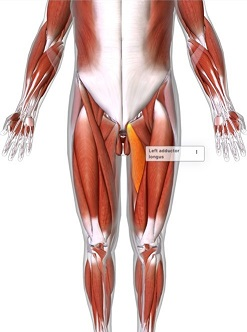 |
Meaning adduct = draw toward |
Function adducts & flexes |
Originupper pubis, below |
Insertion in the linear third |
spaceholder |
Adductor magnus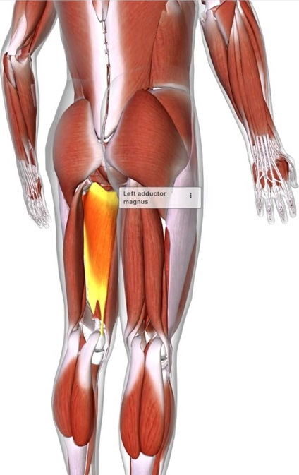 |
Meaningadduct = to draw toward |
Function
adducts hip towards |
Origin outer surface of lower |
Insertion at the adductor tubercle | |
Biceps femoris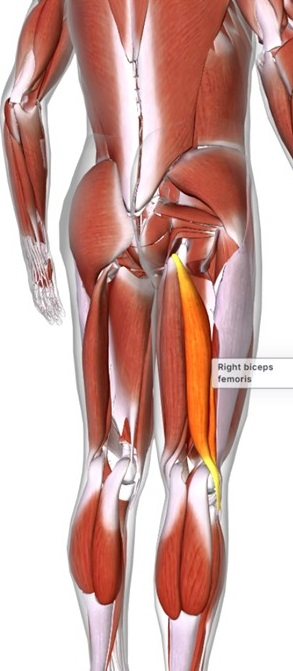 |
Meaning bicept = double-headed |
Function one of three hamstring muscles | |
Originback of upper leg (hamstring) |
Insertionhead of the fibula | |
Extensor digitorum longus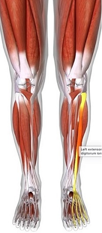 |
Meaningex = out from |
Function
allows foot and toes to be |
Origin at shaft of fibula |
Insertioninto three middle toes | |
Fibularus longus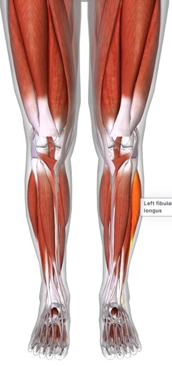 |
Meaningfibularus = calf of the leg |
Functionallows for flexing the ankles |
Originoutermost muscle of calves |
Insertion medial cuneiform bone
| |
Flexor digitorum longus |
Meaningflexor = to bend |
Function
allows for flexing |
Origin at posterior surface |
Insertion toes (all but
| |
Gastrocnemius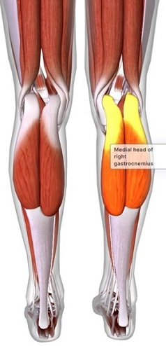 |
Meaninggastrcnemius = |
Functionflexing the foot at the ankle |
Originmedial and lateral |
Insertion tendo calcaneus
| |
Gracilis |
Meaninggrasilis = slender, slim |
Functionadducts hip and |
Originlower ischial pubic ramus |
Insertiontuberosity (large rounded
| |
Pectineus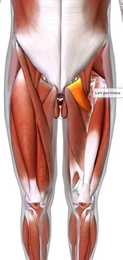 |
Meaningpectineus = comb |
Functionflexes hip, and |
Originpectineal line of pubis |
Insertionpectineal line of the femur | |
Piriformis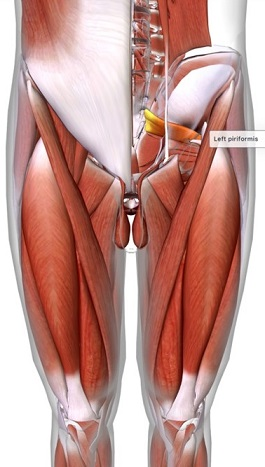 |
Meaningpiriformis = pear shaped |
Functionhelps rotate hip | |
Origininner sacrum |
Insertiontrochanter (two bony
| |
Plantaris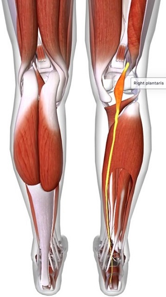 |
Meaningplanta = sole of the foot |
Functionflexes knees and |
Originlower head ridge of femur, |
InsertionAchilles tendon | |
Rectus femoris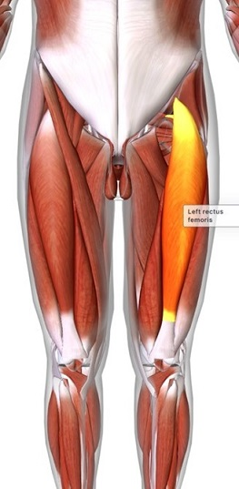 |
Meaningrectus = straight |
Functionflexes hip | |
Originhip (iliac spine) |
Insertionpatella of the knee |
|
Sartorius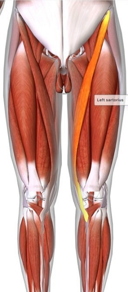 |
Meaningsartor = tailor |
Functionis a synergist muscle | |
Originiliac spine of the |
Insertiontuberosity (large rounded
| |
Semimembranosus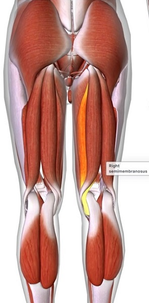 |
>Meaningsemi = half |
Functionone of three |
Originupper back quadrant |
Insertionback of tibial condyle
| |
Semitendinosus |
Meaningsemi = half |
Functionone of three |
Origininner base of pelvis |
Insertiontuberosity (large rounded
| |
Soleus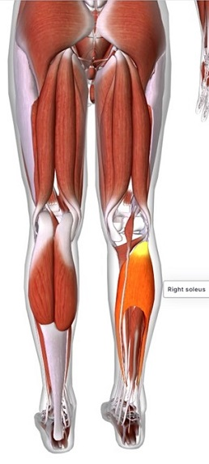 |
Meaningsoleus = flat sandal |
Functionplantarflexion |
Originback of fibular head |
Insertionfirbous tissue of
| |
Tensor fasciae latae |
Meaning tensor = stretcher |
Functionabducts & rotates femur | |
Origin back of fibular head |
Insertion iliotibial tract (IT band)
| |
Tibialis anterior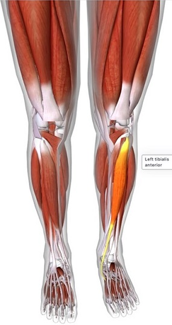 |
Meaningtibia = shinbone |
Functiondorsiflexion |
Originupper half of front shaft |
Insertion wedge and base of the
| |
Tibialis posterior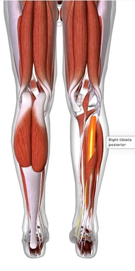 |
Meaningtibia = shinbone |
Functionplantarflexion |
Origininner borders |
Insertionbase of metatarsel |
|
Vastus intermedius |
Meaning vastus = enormous |
Functionfacilitates knee extension |
Originupper femur |
Insertionquadriceps tendon
| |
Vastus lateralis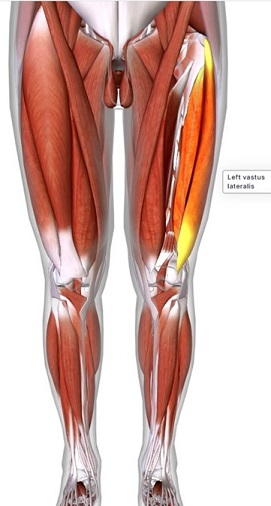 |
Meaning vastus = enormous |
Functionextend lower leg |
Originupper femur |
Insertionquadriceps tendon
| |
Vastus medialus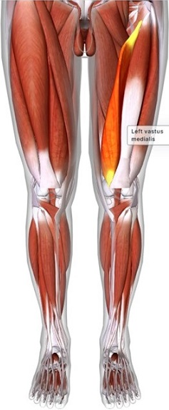 |
Meaningvastus = enormous |
Functionknee extension | |
Originupper femoral shaft |
Insertion quadriceps tendon
|